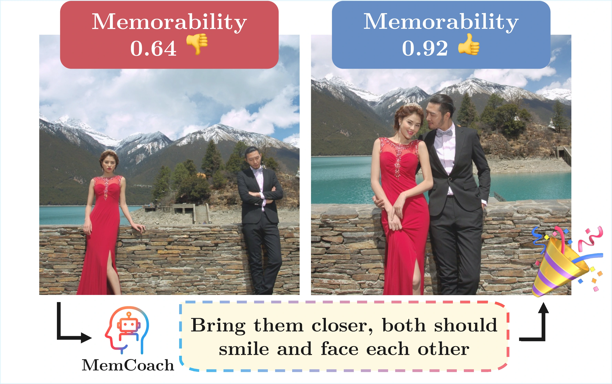
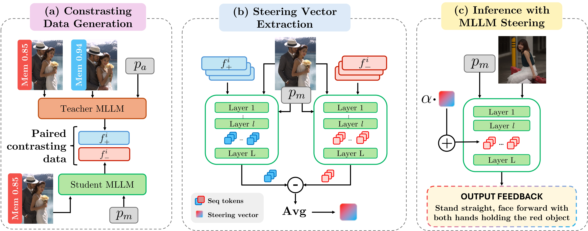
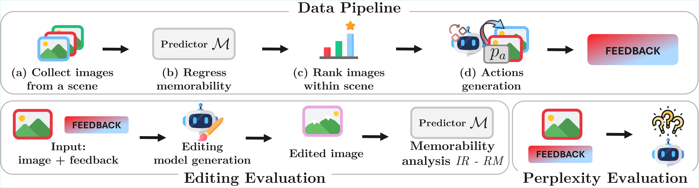
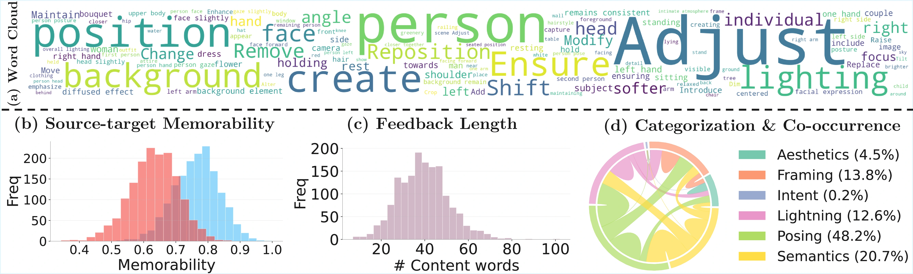
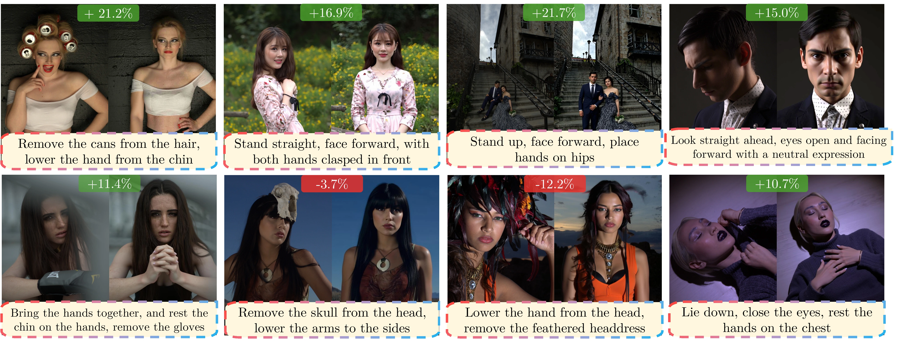
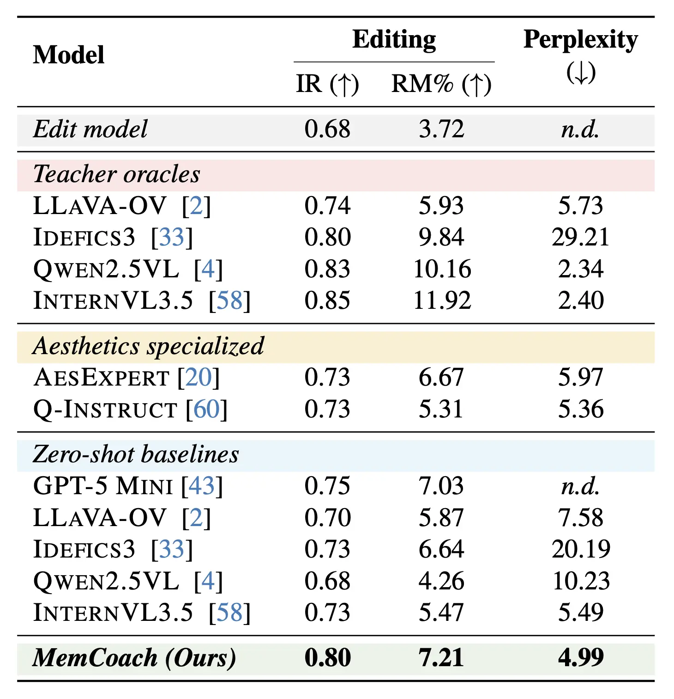

How to Take a Memorable Picture? Empowering Users with Actionable Feedback

Given an input photo, memorability feedback aims to generate natural-language suggestions to guide users toward a more memorable shot. MemCoach provides memorability-aware feedback, effectively assisting users to capture memorable images.
Key Contributions
- First work to formalize Memorability Feedback (MemFeed): generating actionable, natural-language guidance to improve image memorability at capture time
- Introduction of MemCoach, a training-free teacher-student activation steering framework that injects memorability-aware behavior into Multimodal LLMs
- Novel contrastive activation steering strategy that distills memorability directions from teacher-aware vs. student-neutral feedback
- Release of MemBench, a benchmark for memorability feedback training and evaluation
- New evaluation protocol combining editing-based memorability improvement metrics and perplexity-based feedback alignment
- Consistent improvements across multiple open MLLMs (e.g., InternVL3.5, Qwen2.5-VL, Idefics3, LLaVA-OneVision)
- Conceptual shift from memorability prediction or post-hoc editing to interactive visual coaching, demonstrating that memorability can be taught through guidance rather than estimated as a scalar property
Abstract
Image memorability, i.e., how likely an image is to be remembered, has traditionally been studied in computer vision either as a passive prediction task, with models regressing a scalar score, or with generative methods altering the visual input to boost the image likelihood of being remembered. Yet, none of these paradigms supports users at capture time, when the crucial question is how to improve a photo memorability. We introduce the task of Memorability Feedback (MemFeed), where an automated model should provide actionable, human-interpretable guidance to users with the goal to enhance an image future recall. We also present MemCoach, the first approach designed to provide concrete suggestions in natural language for memorability improvement (e.g., “emphasize facial expression,” “bring the subject forward”). Our method, based on Multimodal Large Language Models (MLLMs), is training-free and employs a teacher-student steering strategy, aligning the model internal activations toward more memorable patterns learned from a teacher model progressing along least-to-most memorable samples. To enable systematic evaluation on this novel task, we further introduce MemBench, a new benchmark featuring sequence-aligned photoshoots with annotated memorability scores. Our experiments, considering multiple MLLMs, demonstrate the effectiveness of MemCoach, showing consistently improved performance over several zero-shot models. The results indicate that memorability can not only be predicted but also taught and instructed, shifting the focus from mere prediction to actionable feedback for human creators. Dataset and code will be publicly released upon publication.
Method

The framework consists of three main stages:
- (a) Contrasting data generation: paired samples are built by coupling the memorability-aware guidance of a teacher MLLM with the neutral responses of a student MLLM on the same scene;
- (b) Steering vector extraction: activation differences between memorability-aware and neutral feedback are averaged to obtain a memorability steering vector capturing the latent shift toward effective suggestions for memorability;
- (c) Inference with MLLM steering: the student activations are shifted using the memorability steering vector to produce improved, memorability-oriented feedback without additional training.
MemBench

- Top: Data pipeline for constructing MemBench, including scene grouping, memorability regression, image ranking, and generation of actionable memorability-aware feedback.
- Bottom: Evaluation pipeline assessing feedback quality through editing-based memorability improvement and perplexity scoring.

Data analysis in terms of (a) most frequent words; (b) distribution of memorability scores for the least and most memorable images within each scene; (c) feedback length as measured by content words; and (d) categorization of atomic sub-actions, where the width of each chord indicates the frequency of co-occurrence between categories.
Qualitative Results

For each source image (left), the model provides natural-language feedback (bottom) that is applied to produce the destination image (right). Each score represents the Relative Memorability (RM), indicating how suggested feedback affects memorability. MemCoach provides human-interpretable and actionable feedback that translates into semantic changes for overall improved memorability. Observed failure cases propose to remove out-of-context elements.
Quantitative Results

MemFeed performance of
MemCoach
when comparing to several
teacher oracle,
zero-shot and
aesthetics specialized
MLLMs. MemFeed achieves the best results in the considered metrics. Best results in
bold.

First image description.

Second image description.

Third image description.

Fourth image description.
Video Presentation
Another Carousel
Poster
BibTeX
@inproceedings{laiti2026memcoach,
title={How to Take a Memorable Picture? Empowering Users with Actionable Feedback},
author={Laiti, Francesco and Talon, Davide and Staiano, Jacopo and Ricci, Elisa},
booktitle={Proceedings of the IEEE/CVF Conference on Computer Vision and Pattern Recognition},
year={2026}
}Acknowledgments
Francesco Laiti is supported by PNRR funding (Innovative Doctorates program).
We acknowledge ISCRA for awarding this project access to the LEONARDO supercomputer, owned by the EuroHPC Joint Undertaking, hosted by CINECA (Italy).
This work was supported by the Ministero delle Imprese e del Made in Italy (IPCEI Cloud DM 27 giugno 2022 - IPCEI-CL-0000007) and European Union (Next Generation EU), the EU Horizon ELIAS (No. 101120237), and ELLIOT (No. 101214398).
This work was carried out in the Vision and Learning joint laboratory of FBK and UniTN.